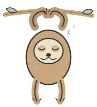

01
Workflow Automation System
Automated end-to-end delivery workflows at Citi, cutting manual steps and raising conversion rates by 32% — built and shipped without a handoff.
View project →AI Engineer & Product Manager
I work at the intersection of AI engineering and financial services. At Citi, I own the roadmap and write the code — using LLMs and agentic tools daily to build faster and ship smarter.
View my workAbout
I'm an AVP at Citi where I wear two hats: product manager and lead developer. I own the roadmap and write the code, which means I define the problem and build the solution myself — my favorite way to work.
My background in Cognitive and Behavioral Neuroscience shapes how I think about users and decision-making. My time across compliance, rewards, and platform engineering keeps me grounded in the regulatory realities most AI-first builders skip over. I think that combination is rare, and I'm leaning into it.

Selected Work
01
Automated end-to-end delivery workflows at Citi, cutting manual steps and raising conversion rates by 32% — built and shipped without a handoff.
View project →02
Designed and built a Java-based testing framework for enterprise-scale financial systems, enabling faster releases with measurable quality coverage.
View project →03
Full-stack quant trading tool built from scratch — from data ingestion and signal logic to a clean front-end interface for monitoring and execution.
View project →Toolkit
Python · Java · LLMs · RAG · Agentic Frameworks · React · SQL · TypeScript
Contact
I'm always open to conversations about AI in fintech, product + engineering roles, or just nerding out about where LLMs are headed.
briana.tran01@outlook.com